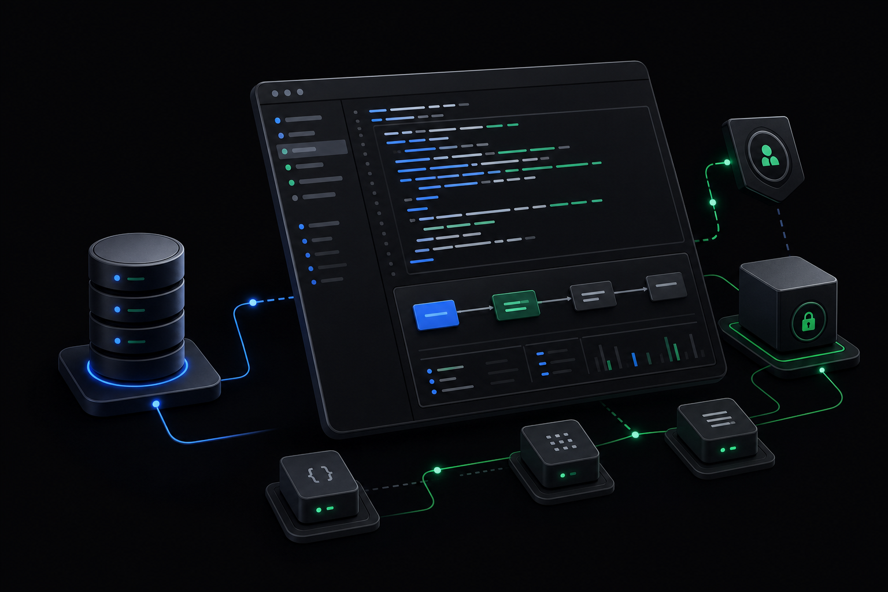

Backend Ecosystem
- PHP 8.x
- Laravel
- CodeIgniter
- Drupal
- Node.js
- NestJS
- Express.js
- Composer
Backend Engineer and Systems Architect with 4+ years of professional experience designing, scaling, and securing production-grade PHP and Node.js environments.
I architect multi-tenant fintech ledgers, national revenue and compliance platforms, automated media playout pipelines, secure REST APIs, and transaction-intensive systems using Laravel, CodeIgniter, NestJS, and Express.js.
Nigeria (Remote, UTC+1)
01 / Engineering profile
I am a Backend Engineer and Systems Architect with over four years of professional experience delivering secure, scalable, and maintainable production systems across PHP and Node.js ecosystems.
My work focuses on modular backend architecture, multi-tenant data isolation, transaction-safe financial workflows, authentication and authorization, database schema design, and high-integrity validation layers.
I have contributed to fintech ledgers, cooperative finance and operations platforms, national revenue compliance systems, government reporting workflows, and fleet-management engines.
02 / Core technical capabilities
Technologies and architectural practices used to build secure, production-grade platforms.
03 / Professional timeline
–Present
Remote
Afrifounders Startup Studio
Core developer across multiple startup portfolios, implementing multi-tenant database-routing strategies, enterprise authentication, secure authorization boundaries, and reusable RBAC patterns.
–
Remote
Edawah Technology Limited
Refactored legacy codebases into Laravel–Inertia–React and NestJS modular architectures. Investigated and optimized bottleneck SQL queries to improve production reliability and maintainability.
–
Remote · Contract
Janus Cleantech Solution
Engineered a tricycle fleet-management and battery-monitoring system. Built digital wallets, shareholder registries, and loan-management engines using strict database transactions to preserve financial consistency.
–
Remote
Probity Global Solution
Handled end-to-end architecture, relational schema optimization, and multi-layer validation for high-integrity fintech applications processing sensitive financial transactions.
04 / Education
–
Kwara State Polytechnic
Graduated
–
NYSC
National service completed.
05 / Selected systems
Selected production platforms involving regulatory workflows, financial transactions, behavioral analytics, and automated media infrastructure.
Backend Developer · DCC Management
A backend system for managing Duty Collection Certificates across fuel importation, exportation, and local-distribution workflows in Nigeria’s downstream petroleum sector.
I developed and maintained backend APIs, business logic, database schemas, and third-party integrations using NestJS, TypeScript, PostgreSQL, and TypeORM.
Full-stack Engineer · Financial Systems
A multi-tenant web application that helps cooperatives manage members, savings, shares, loans, repayments, wallets, accounting, products, and financial reporting from one unified platform.
I developed and maintained the platform’s financial workflows, multi-tenant architecture, role-based authorization, accounting automation, dashboards, reporting features, and third-party integrations. I also implemented reliable wallet processing with database transactions, duplicate-reference checks, and row-level locking to prevent duplicate payment credits.
Full-stack Engineer · Product Builder
A full-stack diagnostic experience that helps experienced professionals uncover the hidden patterns affecting their career growth. A five-minute, multi-step assessment becomes a personalized long-form interpretation of identity clarity, value articulation, evidence visibility, positioning, trust, next-move clarity, and leverage utilization.
A responsive React and React Router frontend uses Tailwind CSS and custom layered styling. Node.js API handlers validate assessment data, generate structured AI-assisted interpretations, manage signed referrals and progress, authenticate administrators, and produce dashboard statistics, with PostgreSQL providing persistent storage.
HttpOnly cookies and fail-closed configuration.Backend Developer
A government compliance platform supporting secure regulatory reporting, policy enforcement, and high-integrity data processing.
Built around multi-tier validation workflows, controlled business rules, strict reporting pipelines, and authorization boundaries that enforce regulatory policy before records advance through the system.
06 / Contact
Have a backend, platform architecture, or full-stack project in mind? Send a message and I’ll respond as soon as possible.